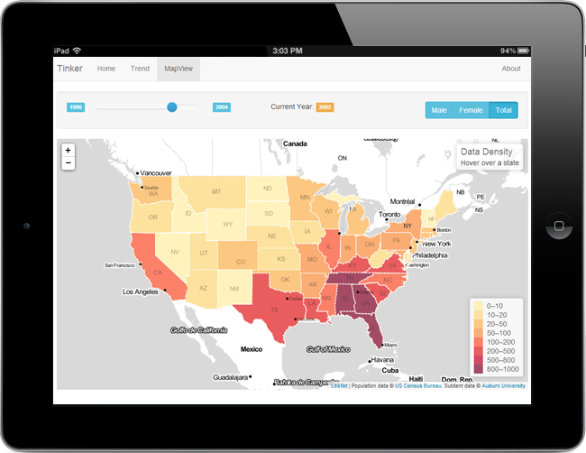

<div class="board" id="board-flw" align="center" style="margin-top:20px">
    

    <div align="left" class="desc">
        <p>Tinker is a project me and a team of highly trained software engineers at Auburn University did for the <a href="http://www.americas.datafest.net/locations" target="_blank">Americas Datafest 2013</a>, which was hosted at Auburn University. The topic of the year is about migration. We decided what better problem to work on than figuring out where Auburn students are coming from.</p>

        <p>Before year 2000, most of the enrollment data are published in paper format and available in the library. <a href="https://oira.auburn.edu/" target="_blank">Auburn University Office of Institutional Research</a> (OIRA) publishes some of the newer data online, but only in static, non-searchable format. For this project, we gather data from the library as well as from OIRA and store them in a relational database, categories based on location, gender, and ethnicity. The result is a searchable data service.</p>

        <p>We implemented a web interface using <a href="http://d3js.org/" target="_blank">D3.js</a>, jQuery, and <a href="http://jekyllrb.com/" target="_blank">Jekyll</a> to show graphs of enrollment, enrollment by state, and by country, by year.</p>
    </div>
</div>